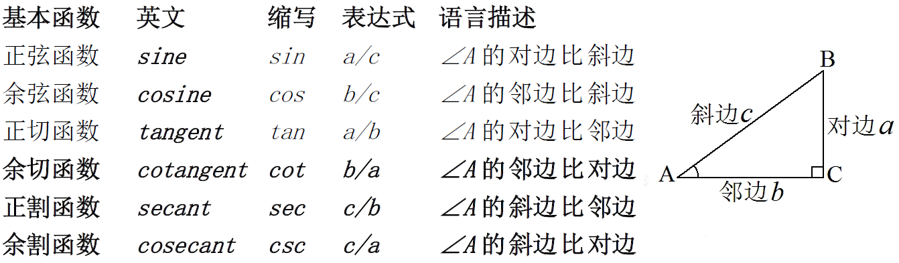
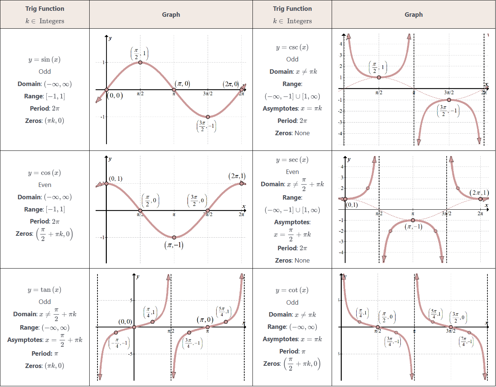
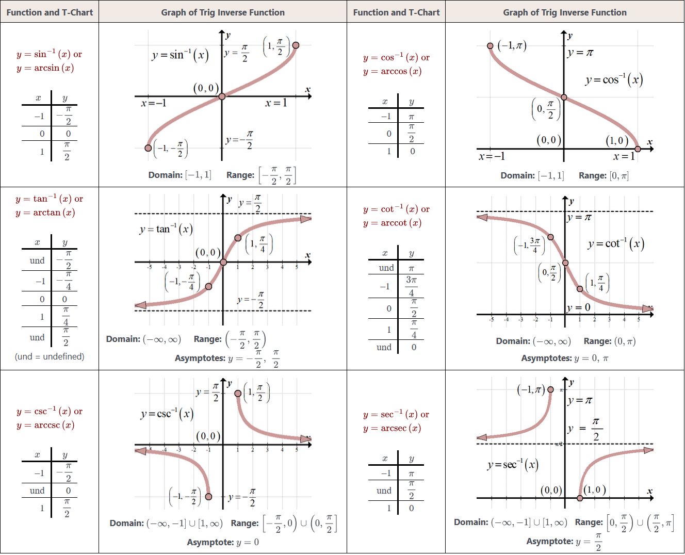

特殊奇偶函数
奇函数：$\displaystyle \ln\frac{1-x}{1+x},\;\frac{e^x-1}{e^x+1},\;\ln(x+\sqrt{1+x^2});\;f(x)-f(-x)$
偶函数：$f(x)+f(-x)$
奇/偶函数嵌套形成的复合函数中，只要有偶函数参与嵌套，就是偶函数。
不等式
$a^2+b^2\geqslant 2ab\quad a+b\geqslant 2\sqrt{ab}$
基本不等式链：
$$\min\left\{a,b\right\} \leqslant\underbrace{\frac{2}{\frac{1}{a}+\frac{1}{b}}}_{调和} \leqslant\underbrace{\sqrt{ab}}_{几何} \leqslant\underbrace{\frac{a+b}{2}}_{算数} \leqslant\underbrace{\sqrt{\frac{a^2+b^2}{2}}}_{平方} \leqslant\max\left\{a,b\right\} $$
$$\frac n{\frac1{x_1}+\frac1{x_2}+\cdots+\frac1{x_n}} \leqslant\sqrt[n]{x_1x_2\cdots x_n} \leqslant\frac{x_1+x_2+\cdots +x_n}n \leqslant\sqrt{\frac{x_1^2+x_2^2+\cdots+x_n^2}n} $$
绝对值不等式：
$$|a|-|b|\leqslant||a|-|b||\leqslant|a\pm b|\leqslant|a|+|b| $$
单调性
证明单调性方法：后项 减 前项、后项 比 前项
三角函数
基本函数与关系

倒数关系：$\displaystyle\begin{cases}\tan\alpha\cdot\cot\alpha=1\\\sin\alpha\cdot\csc\alpha=1\\\cos\alpha\cdot\sec\alpha=1\end{cases}$ 平方关系： $\begin{cases}\sin^2\alpha+\cos^2\alpha=1\\1+\tan^2\alpha=\sec^2\alpha=(\tan\alpha )^\prime \\1+\cot^2\alpha=\csc^2\alpha=(-\cot\alpha )^\prime \end{cases}$
商的关系： $\begin{cases}\displaystyle\frac{\sin\alpha}{\cos\alpha}=\tan\alpha=\frac{\sec\alpha}{\csc\alpha}\\\\\displaystyle\frac{\cos\alpha}{\sin\alpha}=\cot\alpha=\frac{\csc\alpha}{\sec\alpha}\end{cases}$ 导数关系：$\begin{cases}\frac{d}{dx} \tan x = \sec^2 x\\\frac{d}{dx} \cot x = -\csc^2 x\\\frac{d}{dx} \sec x = \sec x \tan x\\\frac{d}{dx} \csc x = -\csc x \cot x\end{cases}$
和差化积、积化和差
和差化积：
$\begin{cases} \displaystyle\sin\alpha+\sin\beta =2\sin\biggl(\frac{\alpha+\beta}2\biggr)\cos\biggl(\frac{\alpha-\beta}2\biggr) &帅+帅=帅哥 \\\displaystyle\sin\alpha-\sin\beta=2\cos\left(\frac{\alpha+\beta}2\right)\sin\left(\frac{\alpha-\beta}2\right) &帅-帅=哥帅 \\\displaystyle\cos\alpha+\cos\beta=2\cos\left(\frac{\alpha+\beta}2\right)\cos\left(\frac{\alpha-\beta}2\right) &哥+哥=哥哥 \\\displaystyle\cos\alpha-\cos\beta=-2\sin\biggl(\frac{\alpha+\beta}{2}\biggr)\sin\biggl(\frac{\alpha-\beta}{2}\biggr) &哥-哥=负嫂嫂 \end{cases}$
积化和差：
$\begin{cases} \displaystyle\sin\alpha\cos\beta=\frac12\left[\sin(\alpha+\beta)+\sin(\alpha-\beta)\right] &帅哥=帅+帅 \\\displaystyle\cos\alpha\sin\beta=\frac12\left[\sin(\alpha+\beta)-\sin(\alpha-\beta)\right] &哥帅=帅-帅 \\\displaystyle\cos\alpha\cos\beta=\frac12\left[\cos(\alpha+\beta)+\cos(\alpha-\beta)\right] &哥哥=哥+哥 \\\displaystyle\sin\alpha\sin\beta=-\frac12\left[\cos(\alpha+\beta)-\cos(\alpha-\beta)\right] &负嫂嫂=哥-哥 \end{cases}$
正和 正在先，正差 正后迁，余和 一色余，余差 翻了天。
倍角公式、万能公式、降幂公式
二倍角公式、万能公式：
$\begin{cases} \displaystyle\sin2\alpha=2\sin\alpha\cos\alpha=\frac{2\tan\alpha}{1+\tan^2\alpha}=\frac{2}{\csc\alpha+\cot\alpha} &\displaystyle\sin\theta=\frac{2\tan\frac{\theta}{2}}{1+\tan^2\frac{\theta}{2}} \\\displaystyle\cos2\alpha=\begin{cases}\cos^2\alpha-\sin^2\alpha\\2\cos^2\alpha-1\\1-2\sin^2\alpha\end{cases} =\frac{1-\tan^2\alpha}{1+\tan^2\alpha}=\frac{\cos^2\alpha-\sin^2\alpha}{\cos^2\alpha+\sin^2\alpha} &\displaystyle\cos\theta=\frac{1-\tan^2\frac{\theta}{2}}{1+\tan^2\frac{\theta}{2}} \\\displaystyle\tan2\alpha=\frac{2\tan\alpha}{1-\tan^2\alpha}=\frac{2\cot\alpha}{\cot^2\alpha-1} &\displaystyle\tan\theta=\frac{2\tan\frac{\theta}{2}}{1-\tan^2\frac{\theta}{2}} \end{cases}$
降幂公式：$\begin{cases} \displaystyle\sin^2\alpha=\frac{1-\cos2\alpha}{2} \\\displaystyle\cos^2\alpha=\frac{1+\cos2\alpha}{2} \\\displaystyle\tan^2\alpha=\frac{1-\cos2\alpha}{1+\cos2\alpha} \end{cases}$ 可通过二倍角公式 $\displaystyle\cos2\alpha=\begin{cases}2\cos^2\alpha-1\\1-2\sin^2\alpha\end{cases}$ 推导出来。
三倍角公式：$\begin{cases} \displaystyle\sin3\alpha=3\sin\alpha-4\sin^3\alpha=4\sin\alpha\sin(60^\circ-\alpha)\sin(60^\circ+\alpha)\\\displaystyle\cos3\alpha=4\cos^3\alpha-3\cos\alpha=4\cos\alpha\cos(60^{\circ}-\alpha)\cos(60^{\circ}+\alpha) \\\tan3\alpha=\tan\alpha\tan(60^\circ-\alpha)\tan(60^\circ+\alpha) \end{cases}$
诱导公式
奇变偶不变，符号看象限。
- 形如 $\displaystyle(2k+1)\cdot \frac\pi2\pm\alpha$，则函数名称变为余名函数（正弦 $\Leftrightarrow$ 余弦，正切 $\Leftrightarrow$ 余切）；
- 形如 $\displaystyle 2k\cdot \frac\pi2\pm\alpha$，则函数名称不变。
前面加上把 $α$ 看作锐角时 原三角函数值 的符号。
反三角函数公式
导数公式：
$\begin{cases} \displaystyle\frac{d}{dx}\arcsin x=\frac1{\sqrt{1-x^2}}\\ \displaystyle\frac{d}{dx}\arccos x=-\frac1{\sqrt{1-x^2}}\\ \displaystyle\frac{d}{dx}\arctan x=\frac1{1+x^2}\\ \displaystyle\frac{d}{dx}\textrm{arccot}\, x=-\frac1{1+x^2} \end{cases}$
余角关系：
$\begin{cases} \displaystyle\arccos x + \arcsin x = \frac{\pi}{2} \\\displaystyle\arctan x + \textrm{arccot}\, x = \frac{\pi}{2} \\\displaystyle\textrm{arccsc}\, x + \textrm{arcsec}\, x = \frac{\pi}{2} \end{cases}$
负数关系：
$\begin{cases} \displaystyle\arcsin(-x)=-\arcsin x \\\displaystyle\textrm{arccsc}\,(-x)=-\textrm{arccsc}\, x \\\displaystyle\arccos(-x)=\pi-\arccos x \\\displaystyle\textrm{arcsec}\,(-x)=\pi-\textrm{arcsec}\, x \\\displaystyle\arctan(-x)=-\arctan x \\\displaystyle\textrm{arccot}\,(-x)=\pi-\textrm{arccot}\, x \end{cases}$
倒数关系：
$\begin{cases} \displaystyle\arcsin\frac1x=\textrm{arccsc}\, x \\\displaystyle\arccos\frac1x=\textrm{arcsec}\, x \\\displaystyle\arctan\frac1x=\textrm{arccot}\, x = \frac{\pi}{2}-\arctan x \end{cases}$
函数图像

Inverse Trigonometric Functions

数学归纳法
证明方法，用于证明形式如下的命题：命题函数 $P(n)$ 对于所有正整数 $n$ 为真。
归纳法包括两个步骤：
- 基础步骤：首先证明 $P(1)$ 为真。
- 归纳步骤：假设 对于任意正整数 $k$，$P(k)$ 为真，证明 $P(k+1)$ 也为真。
即，$\forall k \in N^{*},\:P(k)\rightarrow P(k+1)$
总结表述为如下推断规则：$(P(1) \land \forall k (P(k)\rightarrow P(k+1)))\rightarrow \forall n P(n)$
推广后的数学归纳法可以适用于从某个起始值开始的所有整数。
第一数学归纳法（弱归纳）：
- 基础步骤：证明存在一个起始整数 $n_0$ 使得 $P(n_0)$ 为真。这通常是最小的考虑对象，比如 $n_0 = 1$。
- 归纳步骤：假设 $P(k)$ 对于任意整数 $k \geq n_0$ 为真，证明 $P(k+1)$ 也为真。
结论是：如果上述两个条件都满足，则对于所有的整数 $n \geq n_0$，命题 $P(n)$ 都是真的。
总结表述为如下推断规则：$(P(n_0) \land \forall k \geq n_0 (P(k) \rightarrow P(k+1))) \rightarrow \forall n \geq n_0 P(n)$
附录 A - 数学公式源码
特殊奇偶函数
1 | 奇函数：$\displaystyle \ln\frac{1-x}{1+x},\;\frac{e^x-1}{e^x+1},\;\ln(x+\sqrt{1+x^2});\;f(x)-f(-x)$ |
不等式
1 | $a^2+b^2\geqslant 2ab\quad a+b\geqslant 2\sqrt{ab}$ |
基本不等式链：
1 | $$ |
1 | $$ |
绝对值不等式：
1 | $$ |
基本三角函数与关系
1 | 倒数关系：$\displaystyle\begin{cases}\tan\alpha\cdot\cot\alpha=1\\\sin\alpha\cdot\csc\alpha=1\\\cos\alpha\cdot\sec\alpha=1\end{cases}$ |
和差化积、积化和差
和差化积：
1 | $\begin{cases} |
积化和差：
1 | $\begin{cases} |
倍角公式、万能公式、降幂公式
二倍角公式、万能公式：
1 | $\begin{cases} |
降幂公式：
1 | $\begin{cases} |
三倍角公式：
1 | $\begin{cases} |
诱导公式
1 | - 形如 $\displaystyle(2k+1)\cdot \frac\pi2\pm\alpha$，则函数名称变为余名函数（正弦 $\Leftrightarrow$ 余弦，正切 $\Leftrightarrow$ 余切）； |
反三角函数公式
导数公式：
1 | $\begin{cases} |
余角关系：
1 | $\begin{cases} |
负数关系：
1 | $\begin{cases} |
倒数关系：
1 | $\begin{cases} |
数学归纳法
1 | 证明方法，用于证明形式如下的命题：命题函数 $P(n)$ 对于所有正整数 $n$ 为真。 |
彩蛋
- 封面图片：
- 标题：アルコール度数0.9%
- 作者：ERykk (user-id: 972314)
- 来源：pixiv ID: 90486306